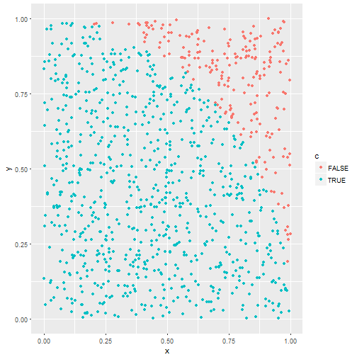

第1部 R言語の基礎
wass80
2017-03-10
自己紹介
- 情報学科計算機 新3回 wass80
- 趣味: ボドゲ, ボカロ
- 後期のプロジェクトは飯作ってばっかりだった気がする
- 去年に引き続きバイトでのネタ
R言語の利点
- 豊富なライブラリ

バイトでRを使う理由
- 生物系のライブラリが異常に多いから
- 生物のRライブラリリポジトリBioconductorには
1000以上もライブラリが登録されている - ほとんどが論文付き
{kind=link}
このスライドの目的
R言語を書かざるをえなくなった人が
- 独特な仕様を理解してつまづきを減らす
- データ解析する
- メタプログラミングする
R言語の名を知っているぐらいの人が対象
スライドの構成
- 第1部はR言語の基本
- 第2部は実際にデータ解析
- 第3部はメタプログラミング
環境構築
起動
この型は?
42## [1] 42の型はわかりますか
答え
42## [1] 421要素の数値型ベクトル
ベクトルの挙動を知らずにRは書けない
変数束縛
識別子 <- 式
x <- 1
y <- 1
x + y## [1] 2Rの変数束縛
- ドットも識別子
- 逆向き束縛
->もある - snake_case推奨
a.b <- 2
1 -> z
a.b + z## [1] 3現在の環境を表示
ls()## [1] "a.b" "x" "y" "z"ベクトルの型
c(TRUE, FALSE, T, F) # 論理値(logical)
c(1L, -2L) # 数値(integer) Lをつけないとdouble
c(1.1, 1e10) # 小数(double)
c("1.1", "a") # 文字列(character)- 上から下に暗黙の型変換が起きる
- ベクトルの型は基本的にこれらのみ
vector
- ベクトル
- コロン演算子で連続した数値ベクトルを作る
1:25## [1] 1 2 3 4 5 6 7 8 9 10 11 12 13 14 15 16 17 18 19 20 21 22 23
## [24] 24 25ベクトル操作
5番目を取り出す (初めの要素は1番目)
a <- 2:7
a[5] ## [1] 65番目を変更
a[5] <- 42
a## [1] 2 3 4 5 42 71要素のベクトル
スカラー(値)は1要素のベクトル
5## [1] 51要素のベクトルの1要素目の1要素目の1要素目
42[1][1][1]## [1] 42ベクトルの結合
c(2:5,3:1) # Concat(結合)のC## [1] 2 3 4 5 3 2 11要素のベクトルの結合
c(1,4,3) # ベクトルのリテラル表現## [1] 1 4 3- ベクトルはネストできない
- ベクトルをベクトルの要素に出来ない
ベクトルはネストできない
- ベクトルに潰される(ようにみえる)
a <- 1:3
b <- 2:3
c(a, b, c(1,3,5))## [1] 1 2 3 2 3 1 3 5ベクトルの型変換
ベクトルは同じ型を持つように型変換される
c(TRUE, 1, 1.1)## [1] 1.0 1.0 1.1c(1:5, "a")## [1] "1" "2" "3" "4" "5" "a"NULL
- 0要素を表す特殊なNULL型ベクトル
- 空集合の表現
NULL## NULLc(NULL, 1:4, NULL)## [1] 1 2 3 4NA
- どの型のベクトルの要素にもなれる
- 欠損値(Not Available)
- NULLと混同しないように
- 殆どの結果がNA
c(1,2,NA,4)## [1] 1 2 NA 4NA == NA## [1] NAまとめ: ベクトル
- スカラーは1要素のベクトル
- ベクトルの要素は同じ型
- ベクトルをベクトルの要素に出来ない
- NULLは0要素ベクトル
- NAは要素
ベクトル化された関数(N->N)
ベクトルを与えることで要素ごとに計算する
sqrt(2)## [1] 1.414214sqrt(c(1,4,9,16,25))## [1] 1 2 3 4 5ベクトルの2項演算(NxN->N)
map演算
1 + 3## [1] 4c(1,2,3) + c(2,4,6)## [1] 3 6 9c(1,1,1) == c(3,1,2)## [1] FALSE TRUE FALSEリサイクル
要素が足りない場合, 繰り返して補う
1:5 + 3 # 1:5 + c(3,3,3,3,3)## [1] 4 5 6 7 81:2 + 1:6 # c(1,2,1,2,1,2) + 1:6## [1] 2 4 4 6 6 8c(3,1,2) == 1 # c(3,1,2) == c(1,1,1)## [1] FALSE TRUE FALSE縮約関数(N->1)
ベクトルを取ってスカラーを返す関数
mean(1:10)## [1] 5.5var(1:10)## [1] 9.166667ベクトル化の嬉しさ
モンテカルロ法で円周率を求める例
s <- 1000
sum(runif(s)^2+runif(s)^2 <= 1)*4/s## [1] 3.048意味
ランダムに点をまいて, 四分円の内側を数える 
説明
runif(5) # Random UNIFication## [1] 0.99240864 0.09130816 0.20068849 0.85771570 0.32205799sum(c(T,F,T,T,F)) # Tは1 Fは0に型変換## [1] 3sum(runif(s)^2+runif(s)^2 <= 1)*4/s## [1] 3.12ループだとダメなの?
res <- 0
for(i in 1:s){
res <- res + (runif(1)^2+runif(1)^2 <= 1)
}
res * 4 / s## [1] 3.248速度比較
library(microbenchmark)
s <- 1000
bench <- microbenchmark(vec_f(s), loop_f(s))(microsecond)
| min | lq | mean | median | uq | max | |
|---|---|---|---|---|---|---|
| vec_f | 288 | 295 | 319 | 304 | 310 | 530 |
| loop_f | 11900 | 12300 | 16600 | 12600 | 14200 | 281000 |
- ベクトル化しないと50倍から100倍遅くなるケースがある
- 従ってベクトル化出来ないならRで書くべきではない
Rを使うべきではない？？？
- スクリプト言語としてRはほぼ最遅
- Rの紹介本でPerlやPythonが紹介されていることがある
- Rで書きにくい処理は無理に書くべきではない
- 統計処理用の言語だと割り切ろう
関数
functionで作る- イコールは名前付き引数の構文
- 式の場合
{}は不要
sub <- function(x,y) x - y
sub(5,3)## [1] 2sub(y = 10, x = 5) # 名前付き引数## [1] -5factor(因子)
(sex <- factor(c("M","F","F"), levels = c("M", "F")))## [1] M F F
## Levels: M F- 有限集合表現
- 内部的にはintegerのvectorであることを覚えておく
str(sex)## Factor w/ 2 levels "M","F": 1 2 2list
連想配列
(obj <- list(one=1, two=c(1,1,1), three="3"))## $one
## [1] 1
##
## $two
## [1] 1 1 1
##
## $three
## [1] "3"listへのアクセス
print_list(obj) #list表示用に定義した関数## $one: 1; $two: c(1, 1, 1); $three: 3obj$one## [1] 1obj[["two"]]## [1] 1 1 1- 異なる型でも格納できる
$か[[でアクセス
属性
- オブジェクトの付加情報
print_list(attributes(obj)) # List## $names: c("one", "two", "three")print_list(attributes(sex)) # Factor## $levels: c("M", "F"); $class: factorstrでは見えない情報が見える
S3 ジェネリック
- 付加情報
classを利用したジェネリックな関数 - 同じ名前の関数でも
classによって関数を呼び分ける - 例:
str関数は引数によって実際は以下の関数に振り分けられる
methods("str")## [1] str.data.frame* str.Date* str.default*
## [4] str.dendrogram* str.logLik* str.POSIXt*
## [7] str.Rcpp_stack_trace* str.root_criteria* str.uneval*
## [10] str.unit.arithmetic*
## see '?methods' for accessing help and source codeS3の例
my_method <- function(x) UseMethod("my_method")
my_method.a <- function(o) cat("called by a", o$a)
my_method.default <- function(o) cat("called by defalut")
obj <- list(x = 1)
class(obj) <- "a" # class属性を"a"に
my_method(obj) # my_method.a が呼ばれる## called by aclass(obj) <- "b" # class属性を"b"に
my_method(obj) # 無いのでmy_method.defualtが呼ばれる## called by defalut- ちなみにclassは複数持てる (継承の役割)
S3ガバガバでは?
- ガバガバ。ただ, 自分でいじる必要はない
- S3はの中身は大抵単なるリスト
num <- c(1,2,3)
class(num)## [1] "numeric"class(num) <- "Date"
str(num) # 日付に!?## Date[1:3], format: "1970-01-02" "1970-01-03" "1970-01-04"S4 クラス
- S3を厳密にしたもの
setClass("Person",
slots=list(name="character", age="integer"))
str(me <- new("Person", name="wass", age=20L))## Formal class 'Person' [package ".GlobalEnv"] with 2 slots
## ..@ name: chr "wass"
## ..@ age : int 20S4 クラスのスロット
@でアクセスする
me@name## [1] "wass"me@age## [1] 20S4の安全性
- 存在しないスロット作れない
- スロットと同じ型しか代入できない
- クラスを変更できない
try(me@weight <- 80)
try(me@age <- "a")
try(class(me) <- "factor")中身がリストのS3の場合, どれも出来てしまう
- S3と同様にメソッドが定義できる
- S4は継承の仕組みもある
まとめ: List, S3, S4
- Listは連想配列,
$でアクセス - S3は
class属性を使った簡易ジェネリック S4はS3から少し厳密になったクラス
- S3とS4どっちが良いかは終わらない議論
- ちなみにGoogleはS3派
- (GoogleにはRコーディング規約が存在する)
大まとめ
- だいたいベクトル
- ベクトルで計算しよ
- ベクトル計算で出来ないのであれば, Rで書くべきでない
- ベクトル演算の命令を把握しておく必要がある
- S3かS4が他の言語でいうデータ構造の役割